I'm Rasa Salih, a 3D modeler and 2D draftsman. I take a vehicle from a rough idea to a fully nested, CNC-ready part set — then stand at the machine myself to see it cut. Always chasing the next tool, the next skill, the best possible result.
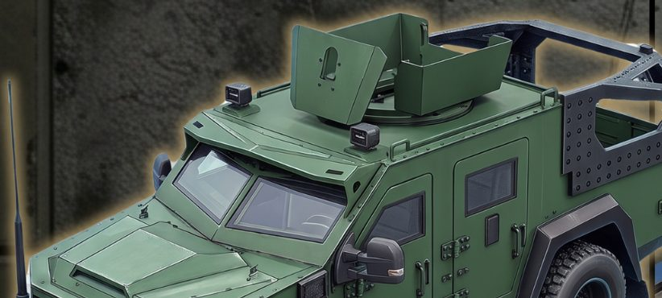
4+
Armored vehicles & tactical pickups designed
4
Core tools: Houdini, AutoCAD, Plasticity, Aspire
4
Stage workflow, drafting to assembly
1–25mm
Steel gauges designed for and cut
3D modeler and CAD drafter specializing in hard-surface and mechanical design — armored vehicle parts, CNC part nesting, and DXF/DWG preparation for laser and plasma cutting.
Nearly a decade of AutoCAD experience, with hands-on production skills in Houdini and Plasticity. A proven physical-to-digital workflow — cardboard prototyping through to 1:1 CAD tracing — plus tabs-and-slots assembly design and shared-path / co-edge nesting for maximum material yield. Direct experience operating and troubleshooting plasma and laser CNC machines on the shop floor.
Four armored vehicles and several tactical pickups so far, modeled and drafted end to end: 3D form in Houdini and Plasticity, then every panel unfolded, nested and proven out on the shop floor. Bearcat and Kordo below are the two featured builds.
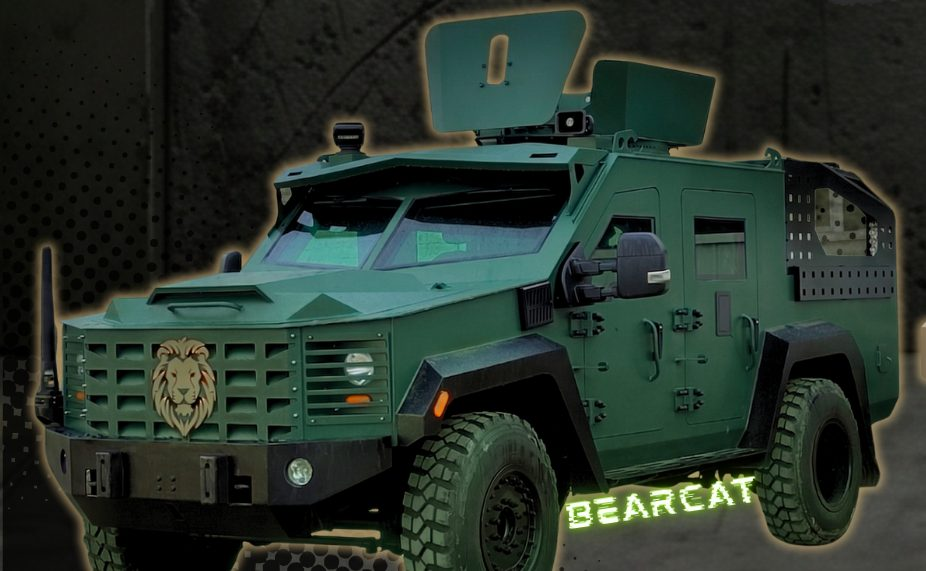
A light armored patrol vehicle modeled from reference into a full 3D surface, then broken down into panel sets and traced 1:1 in AutoCAD so every part left the drafting stage already cut-ready.
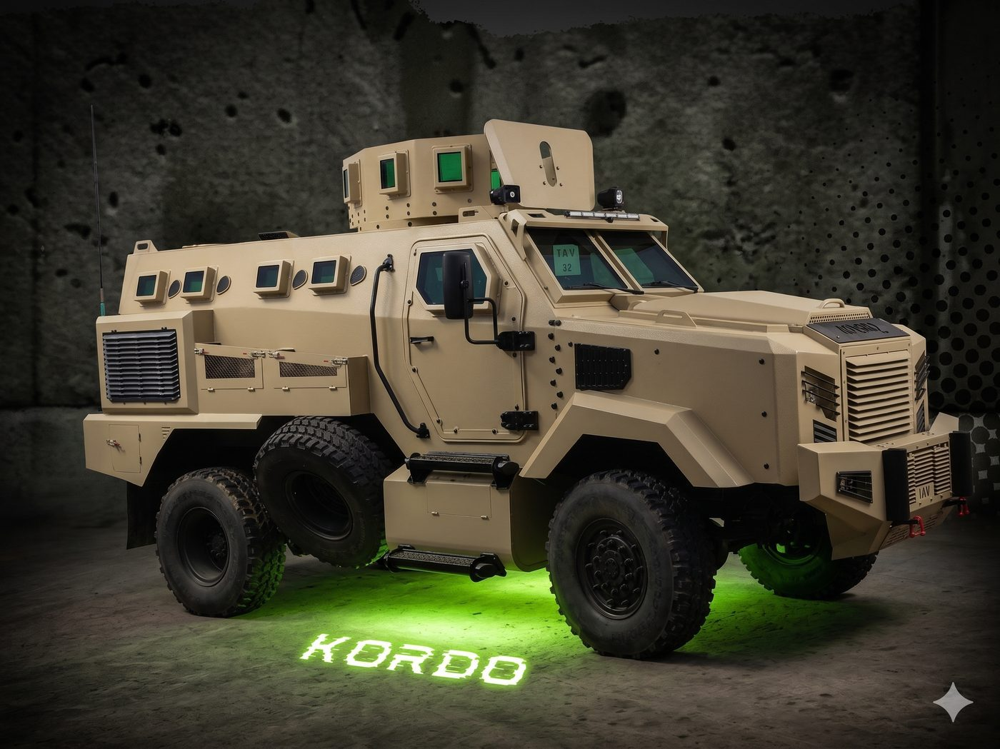
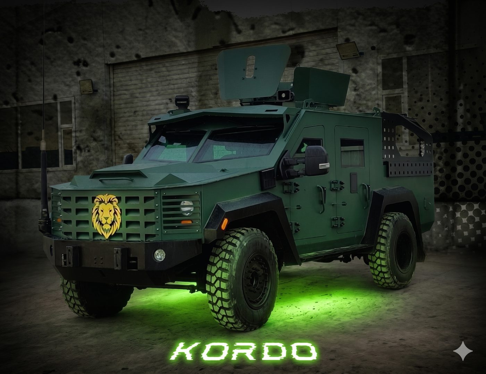
A heavy-duty, combat-ready armored carrier built for multiple use cases, drafted with the same physical-to-digital process: cardboard templates first to prove the geometry, then AutoCAD nesting tuned for minimal scrap. Engineered for the highest level of safety and durability in the lineup.
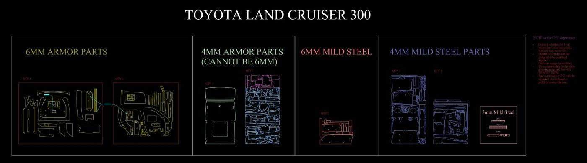
A full armor kit broken down and nested by thickness and material — 6mm and 4mm armor plate, 6mm and 4mm mild steel — with every sheet labeled, quantity-checked and annotated for the CNC department.
Beyond Bearcat and Kordo, I've modeled and drafted several tactical pickup builds and worked through many bumper designs — front and rear, armored and standard — plus regular shifts running the plasma and laser tables myself as CNC operator.
The middle of the job: panel outlines and exploded breakdowns, nested sheets built for yield, then the same geometry burning on the table.
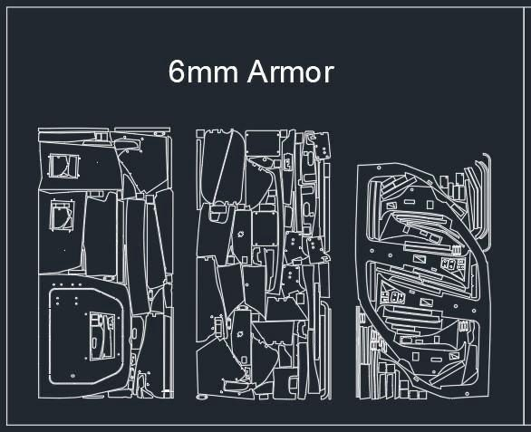
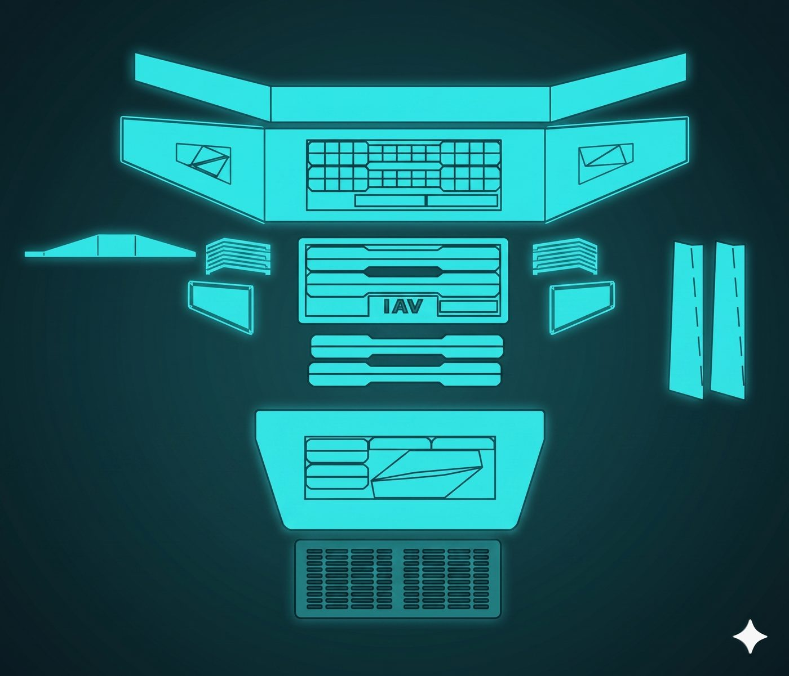
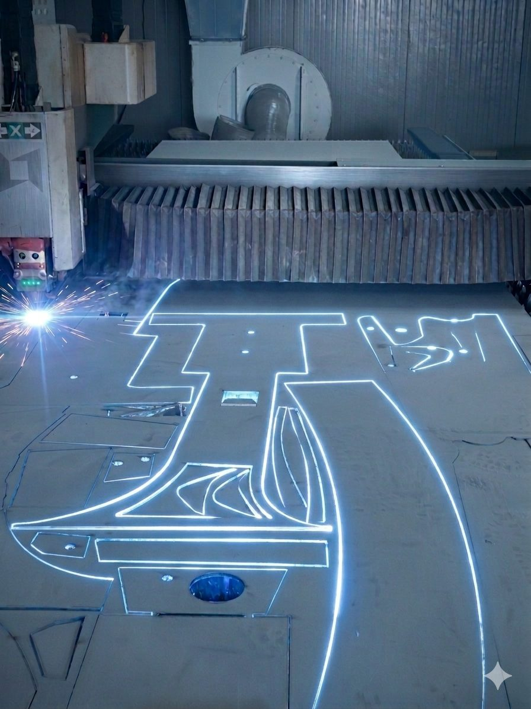
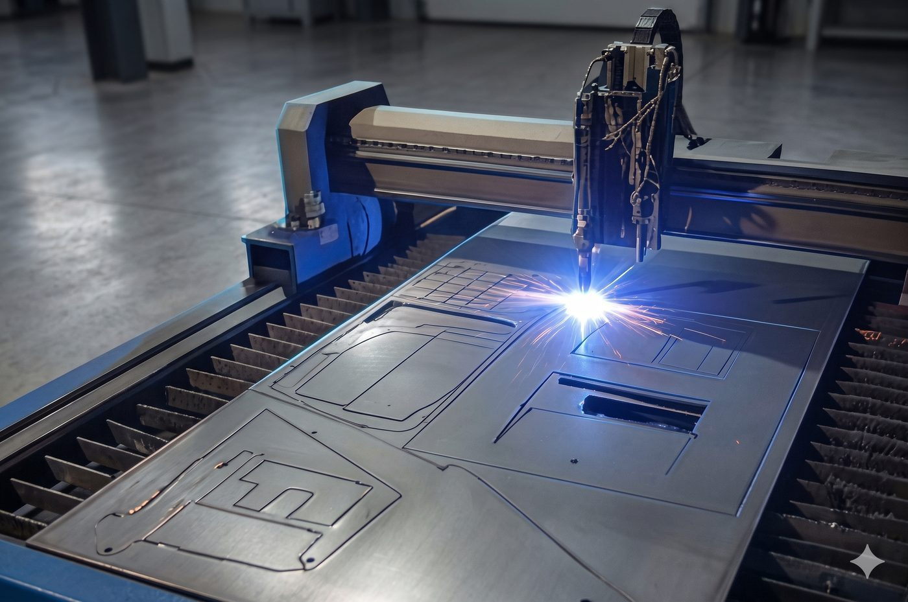
Every build moves through the same four stages, from a cardboard mockup to a finished, welded part.
01
Physical templates and reference traced 1:1 into clean CAD line work.
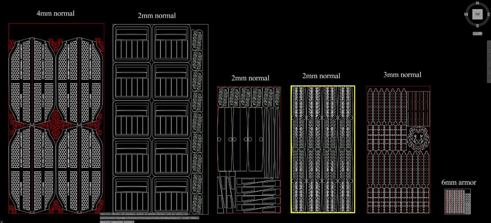
02
Parts nested by gauge and quantity, tabbed and slotted for assembly.
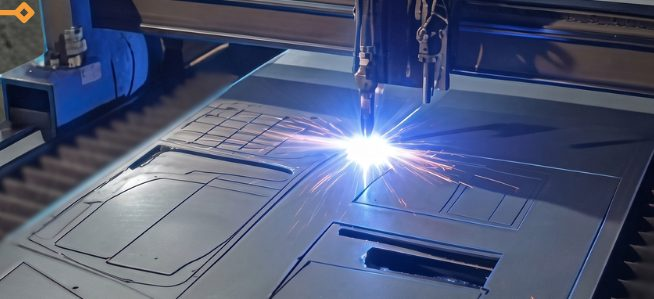
03
Live on the plasma and laser tables, running the cut and catching issues as they happen.
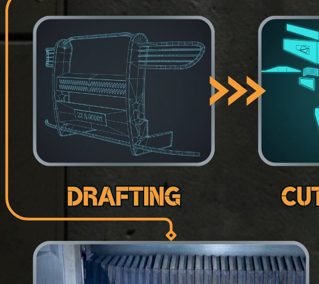
04
Panels welded and fitted into the finished vehicle body.
01
2D drafting and part nesting for CNC-ready output.
02
NURBS modeling for rapid 3D form-making.
03
3D modeling and procedural workflows for vehicle geometry.
04
CNC toolpathing and machining setup for finished parts.
05
Custom AutoCAD commands automating CNC cutting prep.
Cardboard prototypes first, then 1:1 AutoCAD tracing, so parts are CNC-ready and nested with tabs and slots from the start.
Many shifts as CNC operator on industrial plasma and laser machines — hands-on setup and live operation, designing with the machine's limits in mind.
Diagnosing mechanical and software-driven machine errors mid-production to keep downtime to a minimum.
An experienced nester — I lay out every job to hit the fastest cutting time with the least amount of wasted material, using shared-path and co-edge strategies throughout.
I build my own add-ons and small programs to speed up repetitive parts of the job — from nesting shortcuts to daily-routine automation.
International Armoured Vehicles — Sulaimaniyah, Iraq
ZHYA — Sulaimaniyah, Iraq
Sulaimani University — Sulaimaniyah, Iraq
Design it right on screen, and it should go together right on the shop floor.
Open to new modeling and drafting work — vehicles, mechanical parts, or anything that needs to go from screen to steel. Available for relocation (Malaysia, Singapore, Australia) and for remote contract work worldwide.